2026-11-05 · image_gen 参考南京成品生成 · 设定候选，尚未接入游戏
剩余场景人物：7 个角色
每人上排为正面、背面、左侧、右侧站姿，下排为正常、关注、微笑表情。主角、CTO、费翔和南京米衣同伴继续复用，未重复绘制。新人物外貌是游戏设定，不能当作真实人物肖像或历史身份依据。
原图共8,738,291 B；当前透明边缘处理后WebP候选共2,291,462 B，减少约73.8%。处理包含alpha阈值归一化，会改变像素；只有后续PNG到WebP编码经解码核对为无损。没有缩放或量化。这里仍是设定图，尚未切帧、统一动画锚点或验证游戏显示，不能据此宣布生产素材通过。
大学同学
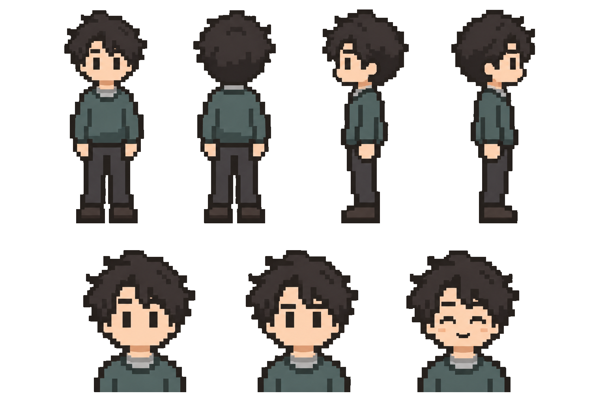
1536×1024；候选 300,448 B，原图 1,244,417 B。尚未获作者认可。对照生成原图（含半透明边缘）
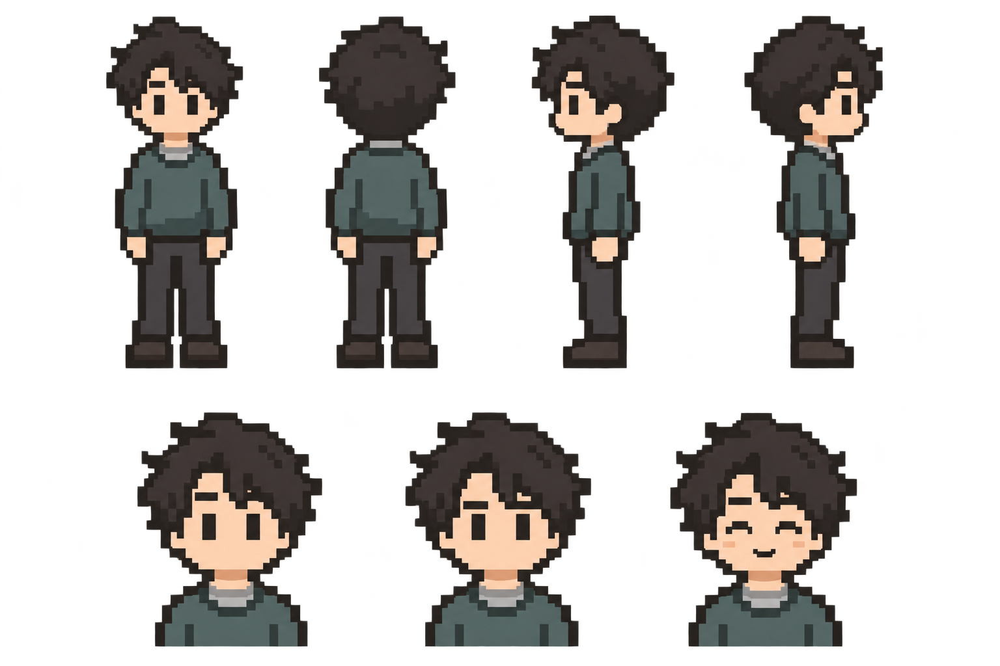
安风徳老板
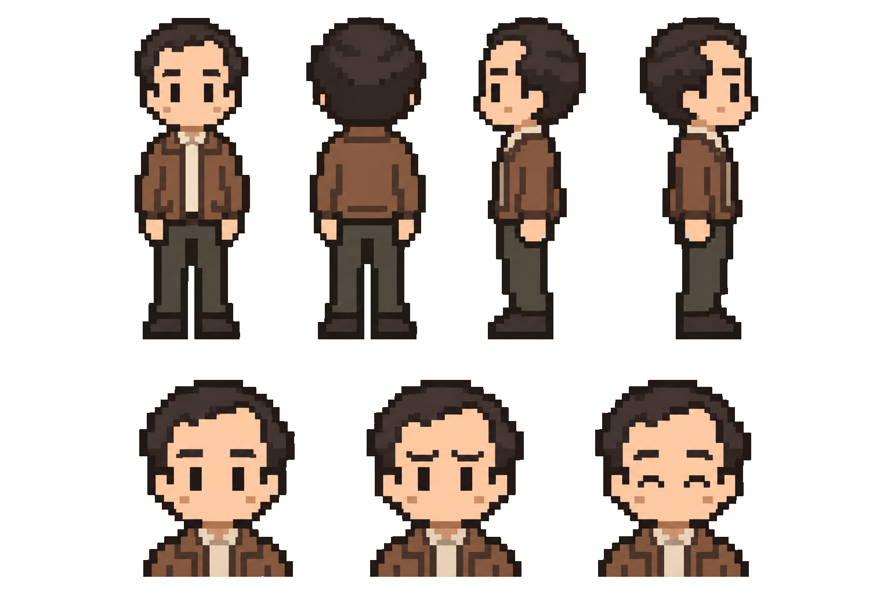
1536×1024；候选 322,628 B，原图 1,247,669 B。尚未获作者认可。对照生成原图（含半透明边缘）
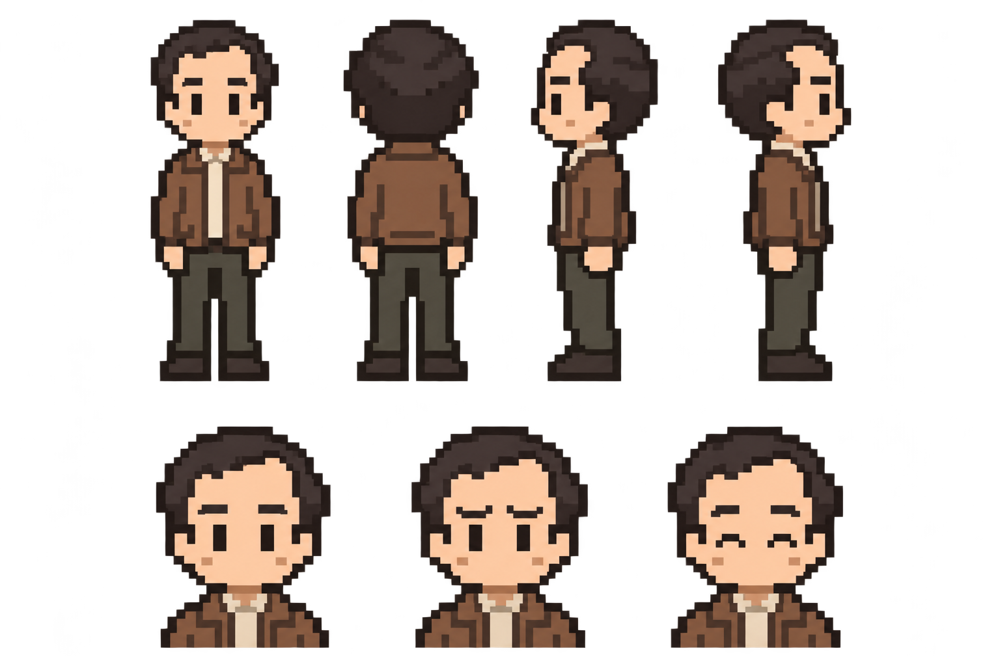
南京老板
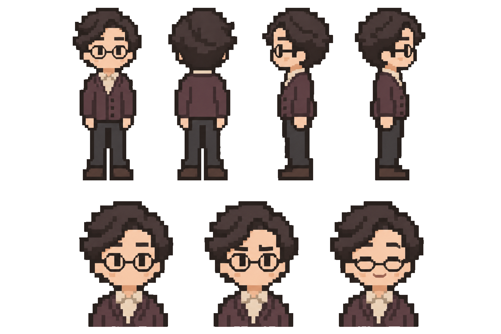
1536×1024；候选 342,922 B，原图 1,254,458 B。尚未获作者认可。对照生成原图（含半透明边缘）
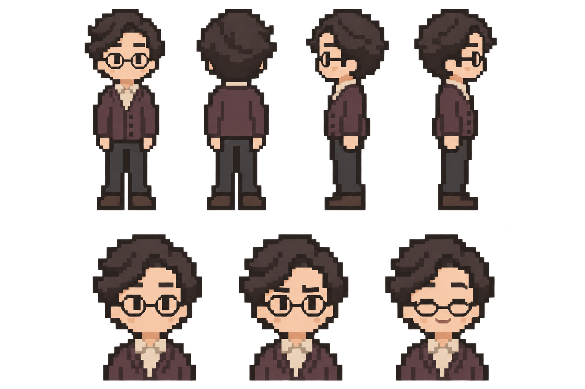
杭州 TL
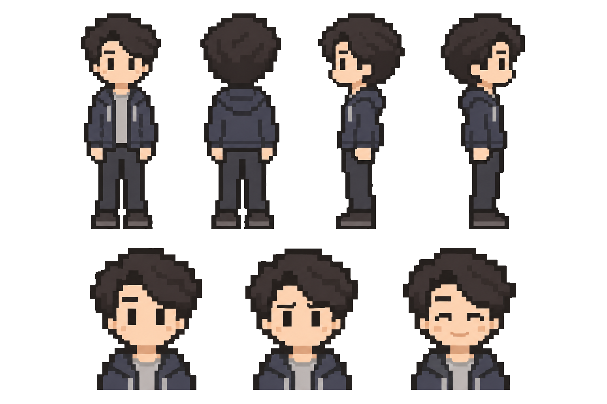
1536×1024；候选 316,176 B，原图 1,223,987 B。尚未获作者认可。对照生成原图（含半透明边缘）
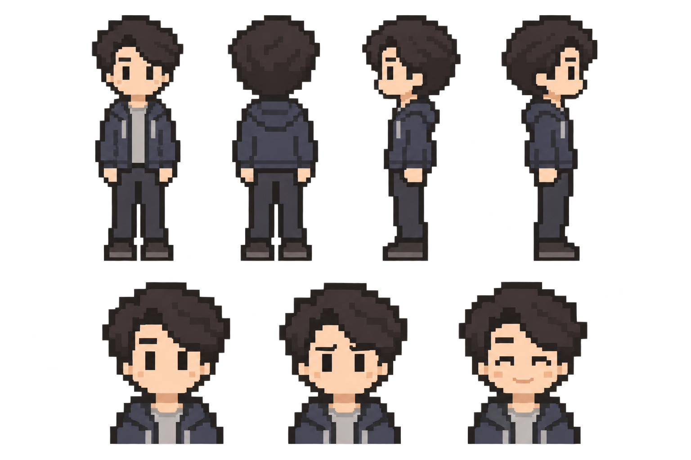
项目同伴
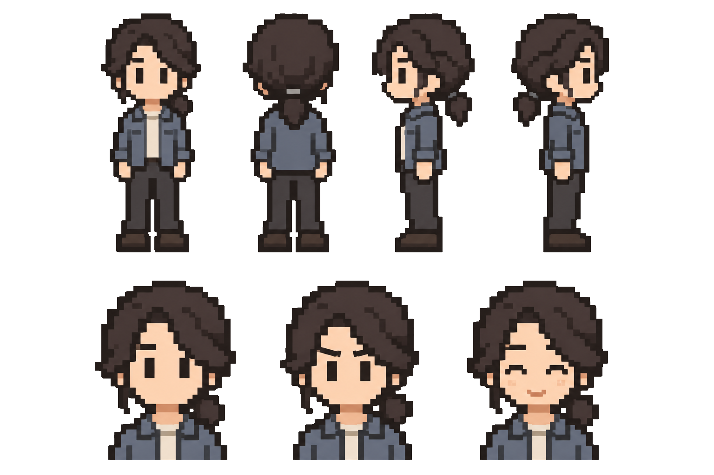
1536×1024；候选 340,436 B，原图 1,236,725 B。尚未获作者认可。对照生成原图（含半透明边缘）
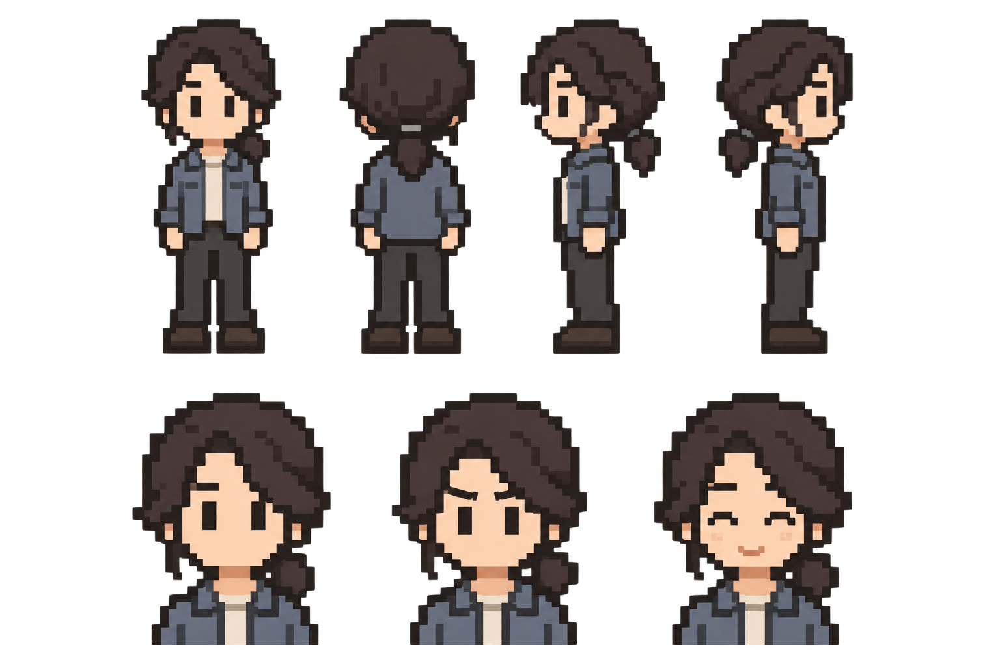
业主家长
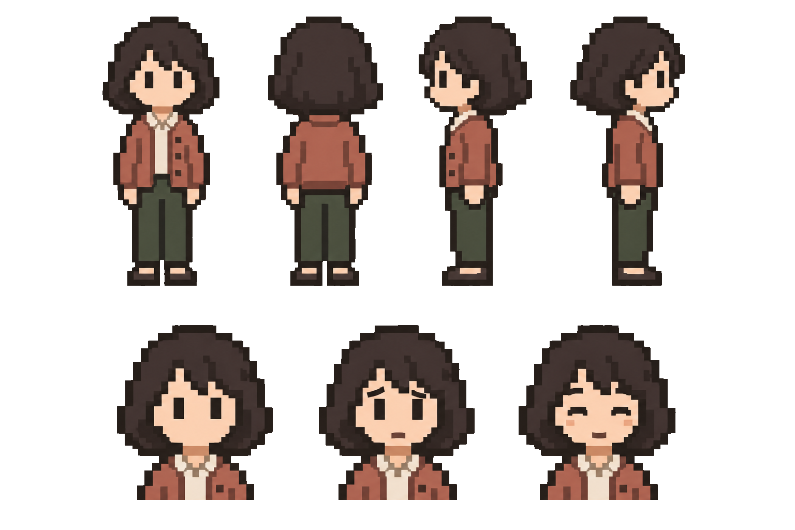
1536×1024；候选 318,638 B，原图 1,221,729 B。尚未获作者认可。对照生成原图（含半透明边缘）
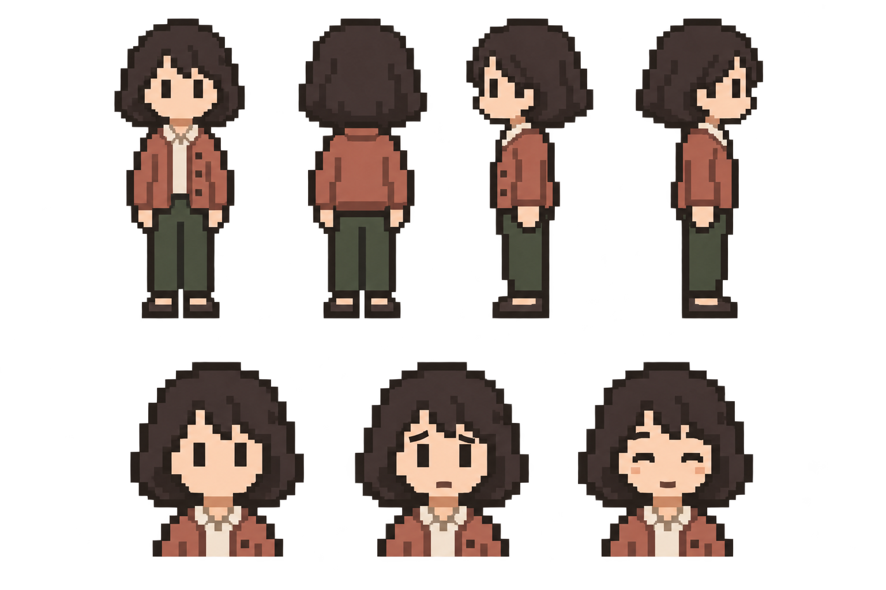
驿站工作人员
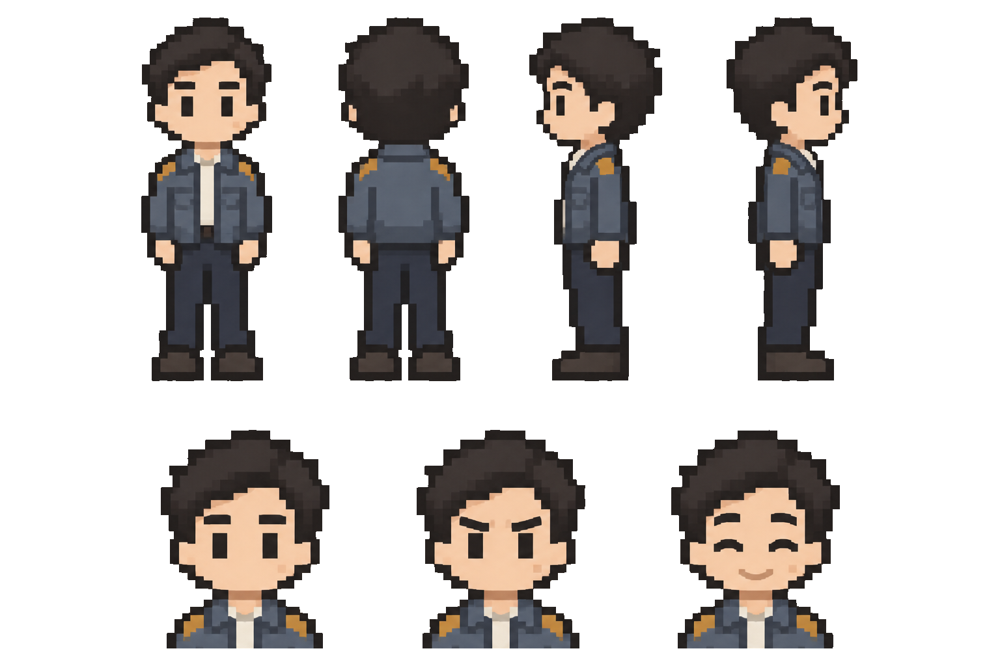
1536×1024；候选 350,214 B，原图 1,309,306 B。尚未获作者认可。对照生成原图（含半透明边缘）
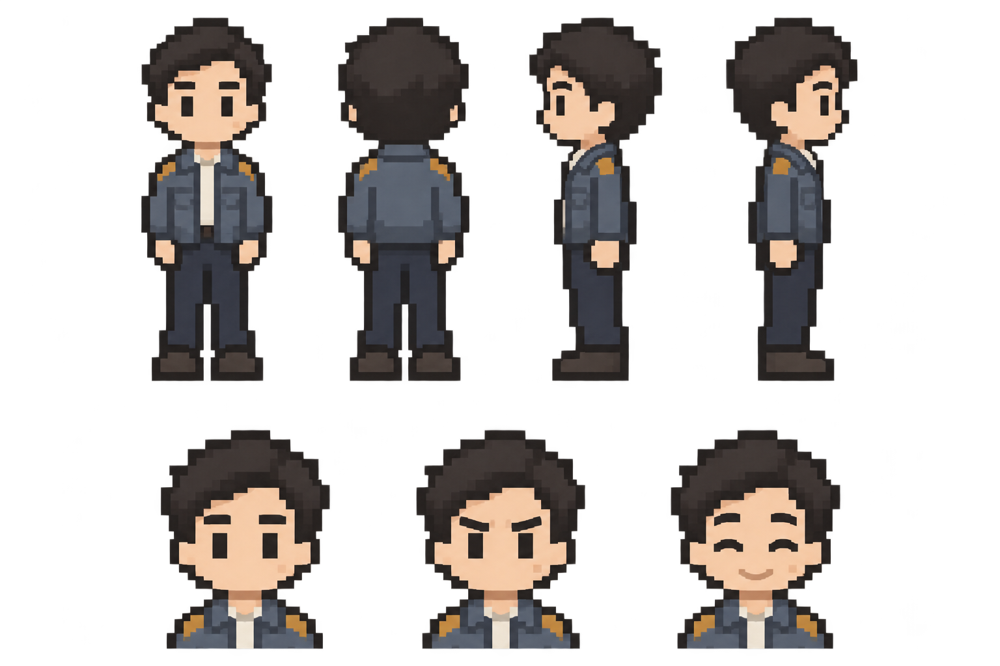
现有南京人物参考
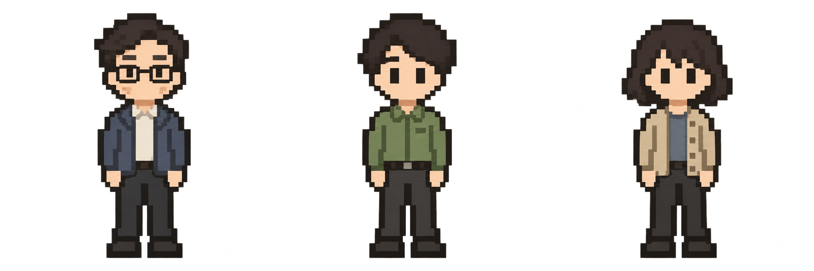
本轮角色整体延续南京的头身比、深描边和低饱和服装。仍需检查严格像素网格、侧面比例和各表情的身份一致性；设定完成不等于行走、坐姿或表情切换已经接入。
人物清单与场景依据 · 处理与压缩记录 · 技术方案 · 南京游戏